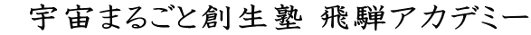

第１回
飛騨の郷講演会
2007年11月1日（木） 午後6時から
船津座 ホール にて ＊入場無料＊
主催 ： 岐阜大学地域科学部、「夢のたまご塾」飛騨アカデミー
後援 ： 飛騨市教育委員会
プログラム
１、挨拶 岐阜大学地域科学部長 高橋弦氏
２、講演
講 師： 岐阜大学地域科学部 林正子教授
テーマ： 「川端康成と〈宿命の少女〉の岐阜物語」
日本人作家として最初のノーベル文学賞受賞者となった川端康成（1899−1972）と岐阜の縁故について
は、地元の人々の間でもこの数年前までほとんど話題に上がることはありませんでした。しかしながら、
川端にとっての〈宿命の少女〉が、岐阜市加納の西方寺で養女として過ごしたことによって、川端がその
〈少女〉との結婚の約束のために3度来岐したこと、またその〈少女〉の面影が文壇出世作となった初期の
代表作『伊豆の踊子』（1926）の踊り子のイメージに重なることなど、川端と岐阜の関係は見逃すことが
出来ません。むしろ、岐阜は川端の作家としての原風景の街のひとつと言っても過言ではないでしょう。
この講演では岐阜ゆかりの川端文学を紹介することによって、飛騨の皆様にも文豪と岐阜の縁故につい
て親しんでいただければ と願っています。
第2回
飛騨の郷講演会・「夢のたまご塾」5周年記念公開講座
2009年3月5日（木） 午後7時から
船津座 ホール にて ＊入場無料＊
主催 ： 岐阜大学地域科学部、「夢のたまご塾」飛騨アカデミー
後援 ： 飛騨市教育委員会
プログラム
１、挨拶 岐阜大学地域科学部長 高橋弦氏
２、報告 地域学としての郷土文学論 林正子氏
３、講演
講 師： 岐阜大学地域科学部 土井邦彦教授
テーマ： 「小説『バッテリー』の心理学
〜いま、”ひとりになる”ということ〜」
あさのあつこ著『バッテリー』 中高生はもちろん、多くの人たちの読まれたこの小説を、発達心理学
の専門家が心理学的に紐解いてみようというのが本講演のテーマです。ここでは、少年たちの「自立」
をいかに「ひとりになれるか」という問題として提起してみようと考えています。ただ、「ひとりになる」と
いうことは、孤立するということではありません。仲間の中で仲間に信頼を寄せつつ、その上で「自らに
責任を持つ」ということです。これは、現代の競争的な社会で要請される「自己責任論」とは、質を異に
しています。このあたりを本小説の主人公や実在の青少年たちの話を交え、語ってみたいと思います。
第3回 飛騨の郷講演会
もっとも身近な自然である里山の成り立ちやそこで生活する生物の多様性について、生態学的
視点とヒトのかかわりという視点で理解を深め、さらに里山の生物多様性がもたらすサービス
機能に目を向けることで、里山を保全する意味を考えてみたいと思います。
2009年10月31日（土） 午後7時〜9時
神岡町公民階 3階会議室 にて ＊入場無料です＊
講 師： 岐阜大学地域科学部 肥後睦輝教授
テーマ： 「里山の生物多様性とヒトのかかわり」
主催 ：岐阜大学地域科学部、「夢のたまご塾」飛騨アカデミー
後援 ：飛騨市、飛騨市教育委員会 協力 ：神岡城桜守の会
第１回 ミニ公開講座
2005年2月4日 １９：３０〜２０：４０ 飛騨市古川町 ハートピア古川
テーマ：「ヒトゲノムを利用したオーダーメイド発病予防の光と影」
講 師：竹中勝信氏 （高山赤十字病院脳神経外科部長）
講義内容：ヒトゲノムとは何かのとても分かりやすい説明から始まり、遺伝子診断の現状と問題点。
具体的な例も挙げて、（たとえば、「家族性脳動脈瘤の遺伝解析」など）現在の研究成果と
世間での誤解についてのお話がありました。
先生の現在進行中のプロジェクト
１．予防について
・住民検診にゲノム結果を加えたオーダーメイド生活指導
・緑内障、２型糖尿病、高血圧など
・飛騨地域の健診と健康増進活動
・若年発症、脳血管障害の予防のためのヒトゲノム解析
・環境ホルモンの測定
２．再発予防について
・発病要因の蓄積と発病きっかけの客観的評価法の開発
・発病者の早期社会復帰に向けてのプログラム、支援研究
とても具体的で、分かりやすい講座でした。ありがとうございました。
＊講義資料をご希望の方は事務局までご連絡下さい。
第２回 ミニ公開講座
2005年4月29日 １４：００〜１５：００ 飛騨市古川町 総合会館
テーマ：「飛騨の炭焼き職人」
講 師：石末順子氏 （飛騨・世界生活文化センター 学芸員）
講義内容：高山市丹生川町で、８０年近く炭焼きをしている谷口太郎右衛門氏の炭焼きを
中心に、飛騨の炭焼きについての講義でした。
炭には黒炭と白炭があり、その区別、飛騨で使われている樹種、炭焼き窯等に
ついてのはとても興味深いものでした。谷口氏は自分で工夫した窯を使っており、
その紹介もありました。
第３回 ミニ公開講座
2005年12月10日 １９：００〜２０：３０ 飛騨市神岡町 神岡町公民館
テーマ：「高校生による二足歩行型ロボットの製作 （歩く！走る！踊る！ロボット）」
講 師：中村英樹氏 （県立飛騨神岡高等学校 教諭）
講義内容：３体のロボットが紹介され、部品からの制作風景、工夫したポイント、
ロボワンでの対戦の模様もスライドで紹介されました。
高校生で唯一決勝に進出し、一回戦で敗退しましたが、
思わず声援が出る戦いでした。予算の少なさを、知恵と労力によって
カバーしていることが良く分かりました。
ニュートリノ・ネオは改造され、２００６年３月の次のロボワンに
向けての準備が始まるとのこと。 がんばれ！！！
公開講座「育てよう！君の夢のたまご。」
2006年10月22日 １２：３０〜 飛騨市古川町 飛騨市文化交流センター
☆ノーベル物理学賞受賞の小柴昌俊先生による講演と感動を呼び覚ますミニコンサート ♪
小柴昌俊先生の講演テーマ「おおきいこと ちいさいこと」
ミニコンサート：大谷康子氏（ヴァイオリン）と藤井一興氏（ピアノ）、作曲家の中野稔氏
公開
講座
これまでに開催した公開講座の報告です
先生方の肩書はセミナー開催当時のものです。
セミナー
夢のたまご塾 飛騨アカデミー
リンク
ゆめたま通信
講師紹介
賛助会
組織
写真集
セミナー
ゆめたまホーム
岐阜県飛騨市より世界に発信 「夢のたまご」を育てようよ！
|  |
 |